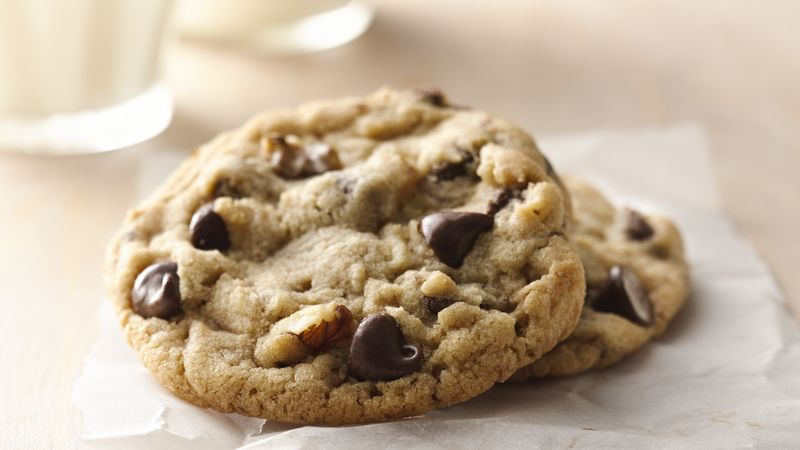

Ultimate Chocolate Chip Cookies
Just like the name says, this is the chocolate chip cookie extraordinaire! Definitely one of Betty's favorites!
Ingredients
- 3/4 cup granulated sugar
- 3/4 cup packed brown sugar
- 1 cup butter or margarine, softened
- 1 teaspoon vanilla
- 1 egg SAVE
- 2 1/4 cups Gold Medal™ all-purpose flour
- 1 teaspoon baking soda
- 1/2 teaspoon salt
- 1 cup coarsely chopped nuts
- 1 package (12 ounces) semisweet chocolate chips (2 cups)
Instructions
- Heat oven to 375ºF.
- Mix sugars, butter, vanilla and egg in large bowl. Stir in flour, baking soda and salt (dough will be stiff). Stir in nuts and chocolate chips.
- Drop dough by rounded tablespoonfuls about 2 inches apart onto ungreased cookie sheet.
- Bake 8 to 10 minutes or until light brown (centers will be soft). Cool slightly; remove from cookie sheet. Cool on wire rack.
